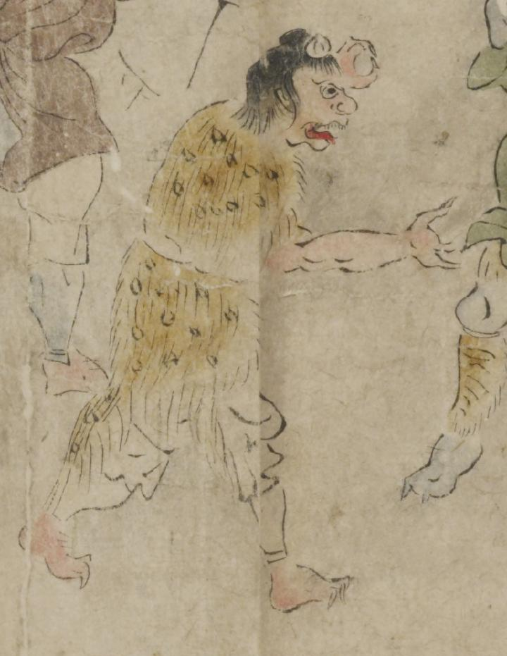

鬼。ざんばら髪で額に角のようなものが付いている。目玉は大きい。口を大きく開き、上顎に歯が並び、赤い舌を出している。手足の指の爪が鋭い。白色の着物を着け、肩と腰に毛皮をかけている。
著作者：坂本弥一郎徳定／出典：親書誌：U426_nichibunken_0080：伊吹山酒呑童子絵巻；イブキヤマシュテンドウジエマキ／日付：2007／資源識別子：U426_nichibunken_0080_0001_0002
Copyright (c)2010- International Research Center for Japanese Studies, Kyoto, Japan. All rights reserved.